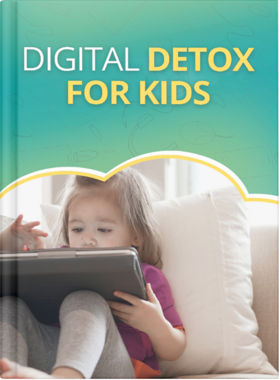

Digital Detox for Kids - eBook
Product profile · Marketplace data 2026-10-09 · Sales-page research 2026-10-09 · Categories: Education, Family & Children, Personal Development

Marketplace record
| Product type | E-books |
|---|---|
| Price | $15.65 (Single payment) |
| Affiliate commission | 50% |
| Refund window | Per the vendor's sales page — check the official page before buying |
| Vendor | AAnchorBiz (listed since 2025-03-19) |
| Marketplace stats* | Cart conversion 5% · cancel rate 7.82% · affiliate earnings/sale $29.43 |
* Vendor-side marketplace statistics reported by Digistore24; they depend on traffic quality and are not a forecast.
Vendor's marketplace description
Product Overview "Digital Detox for Kids" is a comprehensive 21-day program that helps parents break their children's screen dependency using proven neurological techniques. Created by child development specialist Jennifer Anderson, this step-by-step system works WITH children's developing brains rather than against them, eliminating tantrums and battles while restoring healthy development. Target…
From the vendor's sales page
Page title: Digital Detox for Kids - FrontEnd - Abundant Anchor Enterprise
Headline
FOR PARENTS WHO ARE CONCERNED ABOUT THEIR CHILDREN'S SCREEN ADDITION
HOW TO RECLAIM YOUR CHILD'S BRAIN FROM DIGITAL ADDICKTION - WITHOUT BATTLES, TANTRUMS, OR BEING THE "BAD GUY"
THE SECRET EVERY PARENT NEEDS TO KNOW...
Section headlines
- "Our family is completely transformed"
- "Two weeks ago, my son would scream for hours when we took away his tablet. Today, he spent the entire afternoon building a fort and reading. I'm still in shock at how quickly things changed." - Michelle, mother of 7-year-old
- Your children will rediscover the joy of real play and creative engagement. No more blank stares or complaints of boredom when screens are removed.
- You'll witness remarkable improvements in your child's mood, sleep, and behavior. Watch as irritability, defiance, and anxiety begin to fade away.
- You'll rebuild deep family connections that screens had eroded over time. Experience meaningful conversations and genuine laughter that seemed lost forever.
- You'll stop feeling like the enemy and start feeling like a guide. This method transforms you from the "bad guy" who takes away screens to the loving parent who opens doors to a richer childhood.
- Your children will develop critical life skills that were being stunted by excess screen time. Watch their social abilities, emotional regulation, and creative thinking flourish.
- You'll create a harmonious home where technology serves your family instead of ruling it. Establish healthy patterns that will benefit your children throughout their lives.
- A comprehensive step-by-step guide for breaking screen dependency even if your child currently melts down at the mere suggestion of turning off devices.
- 21 daily modules with actionable strategies you can implement immediately to begin healing your child's relationship with technology.
Prices mentioned on the page: $97.00 · $14.00 · $83.00 · $297
Opening copy
A science-backed 21-day program that transforms screen-obsessed kids into confident, creative, and connected children using proven neurological techniques
The Digital Detox for Kids is a revolutionary, neuroscience-based approach to breaking your child's screen dependency by working with their developing brain instead of against it.
Created by Jennifer Anderson — child development specialist, family connection expert, and mother who has helped more than 10,000 families reclaim their children from digital addiction...
Research method: raw HTML fetch · 3745 words on page · quality: rich · researched 2026-10-09. Full research file (MD) ↗
Where to check it out
Read the vendor's full sales page (current price, guarantee terms and bonuses are listed there):
View official sales page
That link is an affiliate link — if you buy through it we earn a commission from the vendor at no extra cost to you.